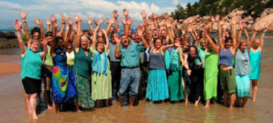

Aquapella are 50 singers from the Townsville area bringing you a cappella world music at its very best: inspiring and uplifting harmonies from around the globe. A South African party song, a Hungarian love triangle, "The Lion Sleeps Tonight" in French - a sumptuous variety of different languages, stories, rhythms and moods to entertain and move you in the wonderful common language of music. Come along and travel the world by song!
Choir director Beat Lehmann was born in Switzerland where he first became involved in choir music by participating in classical productions like Handel's Messiah, Mozart's Mass in C minor etc. A study year abroad gave him the opportunity to sing with the Pontardullais Welsh Male Choir. After completing an M.A. in Social Anthropology he concentrated on his other passion, dance, directing a Modern Dance Company for several years. In 1986, Beat migrated to Australia where he completed a Ph.D. in Linguistics and involved himself in choir music again. For 12 years he conducted AkaBella, a well-known world music choir from Bellingen, NSW. AkaBella participated in major festivals like the National Folk Festival in Canberra, the Bellingen Global Carnival and theWoodford Folk Festival where they featured in the ABC documentary ìFestival on Fire and launched their first CD 'Mosaic'. Beat moved to Magnetic Island in 2003 and has established a similarly successful world music choir for the Townsville area. Beat's choirs focus on the rich musical heritage of cultures around the globe. A South African party song, a Hungarian love triangle, a Mexican lullaby, a French version of 'The Lion Sleeps Tonight' to delve into the incredible variety and depth of a cappella world music and the cultures it represents, is not only fun, but a very enriching and uplifting experience.
Aquapella won the ABC Choir of the Year competition for Queensland in 2006.
beatlehmann@iprimus.com.au